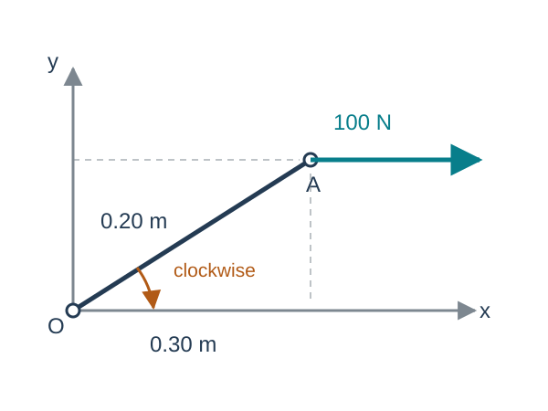
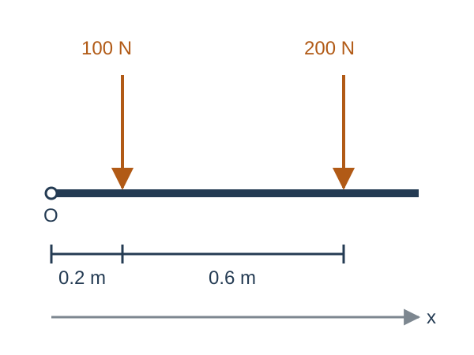
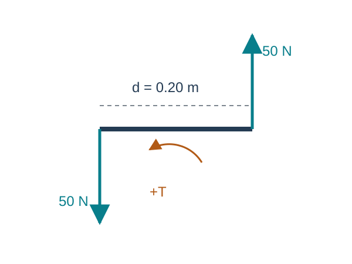
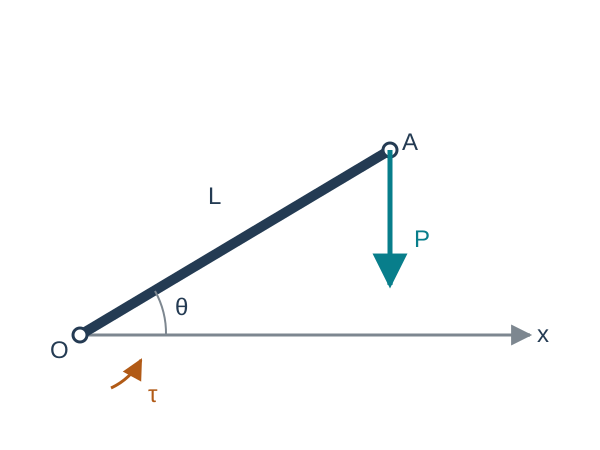

Generalized Forces
Kinematics and Machine Dynamics · Chapter 9
Chapter overview
- Lines of action and moments about a point
- Resultants and moment transfer
- Couples and torque
- Equivalent force systems
- Virtual work and generalized forces
Goal: replace a distributed set of loads by a consistent force–moment description.
Source: Satici, Kinematics and Machine Dynamics, Fall 2020 compiled notes, Chapter 9, §§9.1–9.3, pp. 59–61. Virtual work is an explicitly added bridge to Chapter 11.
A force has a line of action
A force acting on a rigid body has a magnitude, direction, and line of action.
For \(F\) applied at \(A\), its moment about \(O\) is
\[\boxed{M_O=r_{OA}\times F.}\]
The source calls a vector with a specified line of action a bound vector. A free vector has no specified line of action.
The moment depends on the reference point \(O\).
Source: Satici, Kinematics and Machine Dynamics, Fall 2020 compiled notes, §9.1, Eq. (9.1), p. 59.
Sliding along a line of action
Move the application point from \(A\) to \(B\) along the same line, so \(r_{AB}=s\widehat f\) and \(F=F\widehat f\).
\[r_{OB}\times F=(r_{OA}+s\widehat f)\times F=r_{OA}\times F.\]
The force and its moment about every point stay unchanged.
This replacement preserves the external rigid-body effect. Internal stresses can depend on where the load enters the actual structure.
Source: Satici, Kinematics and Machine Dynamics, Fall 2020 compiled notes, Chapter 9 introduction and §9.1. The stress qualification is added to state the rigid-body scope.
Worked example: an offset force

\[r_{OA}=0.3e_x+0.2e_y\ \mathrm m,\] \[F=100e_x\ \mathrm N.\]
\[M_O=r_{OA}\times F=-20e_z\ \mathrm{N\,m}.\]
The moment is clockwise. The perpendicular lever arm is \(0.2\) m.
Source: Satici, Kinematics and Machine Dynamics, Fall 2020 compiled notes, §9.1. Original numerical example and schematic.
Planar moments and their signs
With counterclockwise positive,
\[\boxed{M_{O,z}=xF_y-yF_x.}\]
Only the perpendicular offset from \(O\) to the line of action contributes:
\[|M_O|=F d_\perp.\]
A force passing through \(O\) has zero moment about \(O\), even if the application point is far away.
Source: Satici, Kinematics and Machine Dynamics, Fall 2020 compiled notes, §9.1. Cartesian specialization of Eq. (9.1).
The resultant and total moment
For forces \(F_i\) and applied free couples \(T_j\),
\[\boxed{R=\sum_iF_i,\qquad M_O=\sum_i r_{Oi}\times F_i+\sum_jT_j.}\]
The resultant summarizes the force balance. The total moment contains the effect of the lines of action.
Equal resultants alone do not imply equivalent loading.
Source: Satici, Kinematics and Machine Dynamics, Fall 2020 compiled notes, §§9.1–9.2, Eq. (9.2), pp. 59–60. Applied couples are included explicitly.
Transferring the moment to another point
Let \(r_{PQ}\) point from \(P\) to \(Q\).
\[\boxed{M_P=M_Q+r_{PQ}\times R.}\]
For every force, \(r_{Pi}=r_{PQ}+r_{Qi}\). Therefore,
\[\sum_i r_{Pi}\times F_i =r_{PQ}\times\sum_iF_i+\sum_i r_{Qi}\times F_i.\]
The resultant stays the same when the reference point changes.
Source: Satici, Kinematics and Machine Dynamics, Fall 2020 compiled notes, §9.1, Eq. (9.3) and derivation, pp. 59–60.
Worked example: loads on a beam

Two downward forces act on the beam:
\[R=-300e_y\ \mathrm N.\]
About its left end,
\[M_O=-100(0.2)e_z-200(0.8)e_z,\] \[\boxed{M_O=-180e_z\ \mathrm{N\,m}.}\]
Source: Satici, Kinematics and Machine Dynamics, Fall 2020 compiled notes, §9.1. Original worked example and diagram.
Beam loads: choosing a new reference point
Choose \(Q\) at \(x=0.5\) m, so \(r_{OQ}=0.5e_x\) m.
\[M_Q=M_O-r_{OQ}\times R\] \[=-180e_z-(0.5e_x)\times(-300e_y)=-30e_z\ \mathrm{N\,m}.\]
Directly summing moments about \(Q\) gives the same result:
\[(-0.3)(-100)+(0.3)(-200)=-30\ \mathrm{N\,m}.\]
Source: Satici, Kinematics and Machine Dynamics, Fall 2020 compiled notes, §9.1. Continuation of the beam example. Scalar products in the last line represent xFy.
A couple has zero resultant

A simple couple consists of two equal, opposite, parallel forces with different lines of action.
\[R=F+(-F)=0,\] \[T=(r_A-r_B)\times F.\]
Its magnitude is \(Fd\), where \(d\) is the perpendicular separation.
Source: Satici, Kinematics and Machine Dynamics, Fall 2020 compiled notes, §9.2, p. 60. Original diagram.
The torque of a couple is independent of the point
For a couple, \(R=0\). Moment transfer gives
\[M_P=M_Q+r_{PQ}\times0=M_Q.\]
Thus its torque \(T\) can be treated as a free vector.
For two 50 N forces separated by 0.20 m,
\[\boxed{|T|=50(0.20)=10\ \mathrm{N\,m}.}\]
The word couple denotes the force system. Its torque is the moment vector.
Source: Satici, Kinematics and Machine Dynamics, Fall 2020 compiled notes, §9.2, p. 60. Numerical example refers to the preceding diagram.
Equivalent force systems
Two systems are equivalent for rigid-body analysis if they have
\[R'=R,\qquad M'_O=M_O\]
at one chosen point \(O\).
Moment transfer then guarantees equal moments at every other point.
For example, two systems with zero resultant and the same couple torque are equivalent even if their force locations differ.
Source: Satici, Kinematics and Machine Dynamics, Fall 2020 compiled notes, §9.3, pp. 60–61.
Replacement by a force and a couple
At any selected point \(O\), replace the entire loading by:
- A force \(R\) whose line of action passes through \(O\).
- A free couple of torque \(M_O\).
\[\boxed{\text{Equivalent loading at }O:\quad (R,M_O).}\]
When moving a force to a parallel line through a new point, include the couple required to preserve the moment.
Source: Satici, Kinematics and Machine Dynamics, Fall 2020 compiled notes, §9.3, p. 61.
When one force is enough
A single force \(R\) at position \(r\) can replace the system only if
\[r\times R=M_O.\]
For \(R\ne0\), this requires \(M_O\cdot R=0\). Then one solution is
\[r=\frac{R\times M_O}{\|R\|^2},\]
and adding any multiple of \(R\) gives the same line of action.
For the beam, \(x(-300)=-180\), so the single downward resultant acts at \(x=0.60\) m.
Source: Satici, Kinematics and Machine Dynamics, Fall 2020 compiled notes, §9.3. Single-force condition and solution derived as an extension of replacement.
A spatial load may retain a couple
Decompose the moment into parts parallel and perpendicular to \(R\):
\[M_O=M_\parallel+M_\perp,\qquad M_\parallel=\frac{R\cdot M_O}{\|R\|^2}R.\]
A change of line of action can absorb \(M_\perp\) into \(r\times R\).
The parallel part remains as a couple. This force plus parallel couple is a wrench.
If \(R=0\) and \(M_O\ne0\), the loading is a pure couple.
Source: Satici, Kinematics and Machine Dynamics, Fall 2020 compiled notes, §9.3 and Chapter 5 screw geometry. Wrench decomposition is an instructional extension.
Distributed loads
For a force density \(w(x)\) acting downward on a beam,
\[R_y=-\int_0^Lw(x)\,dx,\qquad M_{O,z}=-\int_0^Lxw(x)\,dx.\]
For \(w(x)=w_0x/L\),
\[R_y=-\frac{w_0L}{2},\qquad M_{O,z}=-\frac{w_0L^2}{3}.\]
The equivalent resultant acts at \(x_R=2L/3\), toward the heavier end of the triangular load.
Source: Satici, Kinematics and Machine Dynamics, Fall 2020 compiled notes, §9.3. Original continuous-load example obtained by integrating the resultant and moment definitions.
Power provides a consistency check
For a rigid body, \(v_i=v_O+\omega\times r_{Oi}\).
The power of all applied forces and couples becomes
\[\boxed{\mathcal P=\sum_iF_i\cdot v_i+\sum_jT_j\cdot\omega =R\cdot v_O+M_O\cdot\omega.}\]
Equivalent force systems produce the same instantaneous rigid-body power.
Use the force and moment at the same reference point as the translational velocity.
Source: Satici, Kinematics and Machine Dynamics, Fall 2020 compiled notes, §9.3 and §7.6. Power identity derived as a bridge to generalized forces.
Generalized forces from virtual work
Let \(q=(q_1,\ldots,q_n)\) describe independent configurations and \(p_i=p_i(q)\).
With \(J_i=\partial p_i/\partial q\),
\[\delta W=\sum_iF_i^T\delta p_i =\sum_iF_i^TJ_i\delta q=Q^T\delta q.\]
\[\boxed{Q=\sum_iJ_i^TF_i.}\]
For a rigid-body couple, add \(J_\omega^TT\) when \(\omega=J_\omega\dot q\).
Source: Satici, Kinematics and Machine Dynamics, Fall 2020 compiled notes, Instructional bridge beyond §§9.1–9.3, consistent with the generalized-coordinate formulation in §11.2.1. Assumes independent coordinates and ideal constraints.
Worked example: one revolute joint

For \(q=\theta\),
\[p=L\begin{bmatrix}\cos\theta\\\sin\theta\end{bmatrix},\quad F=\begin{bmatrix}0\\-P\end{bmatrix}.\]
With a positive actuator torque \(\tau\),
\[Q_\theta=\tau+\left(\frac{\partial p}{\partial\theta}\right)^TF =\boxed{\tau-PL\cos\theta}.\]
Source: Satici, Kinematics and Machine Dynamics, Fall 2020 compiled notes, Original virtual-work example and schematic. Cross-check: this is exactly the moment of the tip force about the joint plus the actuator torque.
Force-analysis bookkeeping
Before writing equilibrium or motion equations:
- Identify the body and all external forces and couples.
- State the reference point, axes, and positive moment direction.
- Reduce the loads to \(R\) and \(M_O\) if that simplifies the calculation.
- Keep every moment with its reference point.
In Chapter 10, these loads determine mass-center acceleration and angular acceleration.
Source: Satici, Kinematics and Machine Dynamics, Fall 2020 compiled notes, Chapter 9 synthesis.
References and next chapter
Primary: Aykut C. Satici, Kinematics and Machine Dynamics, Fall 2020 compiled notes, Chapter 9, pp. 59–61.
Supporting: Kane and Levinson, Dynamics: Theory and Applications (1985), force-system development. Original course Lecture06 covers moments, couples, and replacement.
Virtual work and the numerical examples extend the compiled chapter to connect with equations of motion.
Next: Chapter 10, Formulation of Equations of Motion
Source: Satici, Kinematics and Machine Dynamics, Fall 2020 compiled notes, Chapter 9 reference [20].